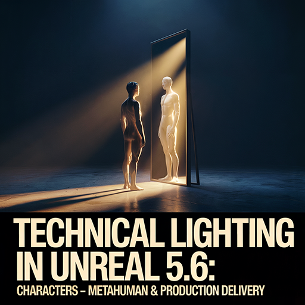

Technical Lighting in Unreal 5.6: Essentials — 3 Point Setup & Light Fixtures

Key Learnings
-
Unreal light types & setup:
- Point
- Spot
- Rect
- Directional
-
3 Point Lighting setup and control:
- Key Light
- Rim Light
- Fill Light
-
Blueprint basics:
- Variables
- Events
- Functions
-
Light Fixture Blueprint:
- On/Off switch control
- Intensity & Color parameter adjustment
Outcomes
- 3 Point Lighting applied to a character/object basic scene
- Light Fixture blueprint actor (switch control, intensity/color adjustment)
Technical Lighting in Unreal 5.6: Environments — Sky Dome & Sequencer

Key Learnings
- Sky Dome & Sky Atmosphere setup
- Sequencer for syncing camera & lights (event-driven cutscenes)
- Blueprint Timeline node for Day/Night transitions
- Volumetric Fog, Post Process basics
Outcomes
- Day/Night cinematic scene with Sky Dome and synced lighting
- Sequencer cutscene (camera cuts & light fades triggered by events)
Technical Lighting in Unreal 5.6: Characters — Metahuman & Production Delivery

Key Learnings
-
Metahuman lighting:
- Skin Shading
- Eye Specular / Catchlight
- Enhanced Key / Rim / Fill setup for characters
-
Metahuman + Sequencer direction:
- Lighting events synced with acting performance
- Cutscene-based cinematic sequence
- Construction Script for large-scale Light Fixture placement/management
- Material & Post Process parameter control
-
Large-scene optimization:
- Light Channels
- LOD(Level Of Details) · Culling
- Minimizing Event Tick
-
Production Delivery:
- Unreal build & packaging settings
- Cinematic output via Movie Render Queue
- Optimized workflow for production-ready delivery
Outcomes
- Metahuman cinematic: Character acting + Eye Specular / Catchlight + synced lighting/environment
- Production Delivery outputs: Unreal packaged build & cinematic video